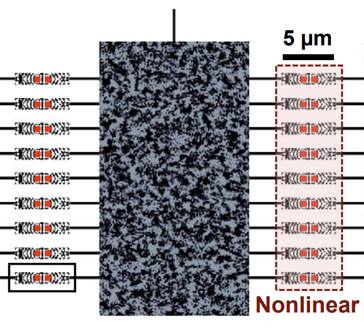

All-Optical Deep Learning with Quantum Nonlinearity
* Equal contribution.
All-optical deep learning leveraging quantum nonlinearity; collaborative work on optical computing.
Hi, I’m Yutian Tao, a final-year Ph.D. student in Computer Science at the University of Wisconsin–Madison, advised by Prof. Eftychios Sifakis. Before my Ph.D., I earned my B.S. in Computer Science from Nanjing University. My research centers on physics-based simulation and numerical methods, with a focus on building fast, robust solvers for discretized PDE systems that arise in graphics and physical modeling. In particular, I work on Stokes and other saddle-point problems, multigrid and Krylov methods, and efficient simulation pipelines.
I enjoy working at the boundary of theory and systems by developing algorithms that are mathematically grounded and engineering them into implementations that scale and behave reliably in practice. I’m also interested in how physics-based simulation can be applied to robotics, and in how large language models (LLMs) and their extensions may reshape the way we learn, create, and work.
* Equal contribution.
All-optical deep learning leveraging quantum nonlinearity; collaborative work on optical computing.
Adaptive reduced-order models for deformation dynamics using interpolated linear bases.
Theoretical framework connecting RAG to noisy in-context learning with risk bounds.
Symmetric multigrid preconditioning for Krylov solvers applied to Stokes flow in graphics and simulation.
Facial flap surgery simulator built with projective dynamics for real-time, stable biomechanical simulation.
Long-term clinical outcomes of unilateral cleft lip repair; supporting simulation and validation pipeline.
Efficient handling of localized collisions in projective dynamics for surgical and graphics applications.
Research Scientist Intern · Reality Labs
Built an AI-driven simulation pipeline with reduced-order modeling (300k+ soft-body samples) and a physics-informed autoencoder for 1k× compression and 70% lower simulation error.
Applied Research Intern
Built Marching Cubes voxelization and mesh QC for 3D asset validation, focusing on watertight mesh generation and removing 87% of malformed meshes for simulation-conditioned vision models.
Research Intern · Internet Graphics
Ported and profiled the Incremental Potential Contact (IPC) algorithm in modern C++, uncovering bottlenecks and outlining optimizations for graphics research.